Акції
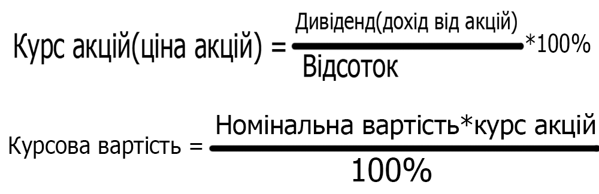Безробіття
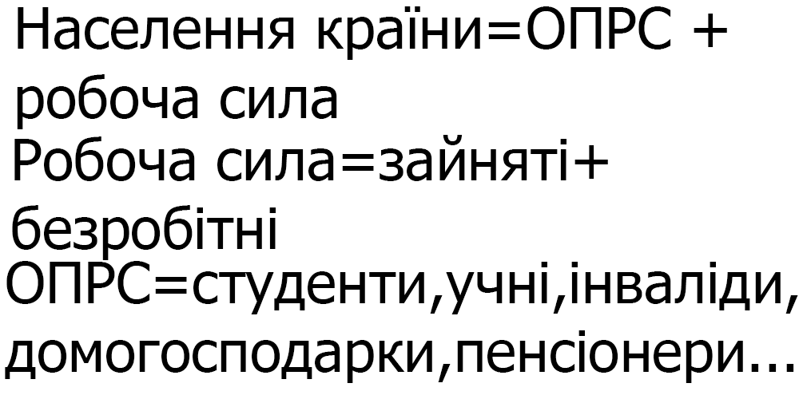Бюджетна лінія чи шось таке
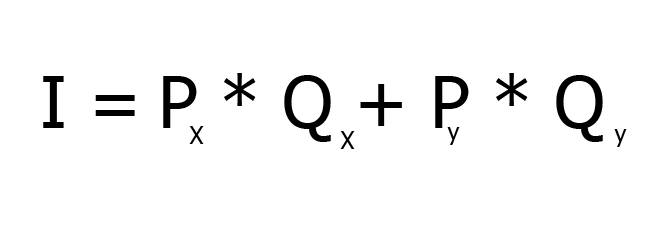Дохід
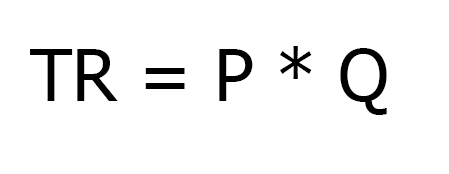Ефективність виробництва
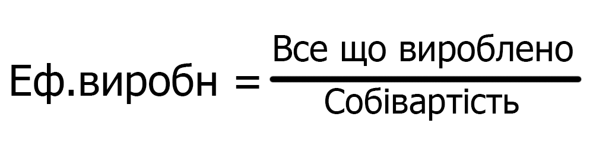Економічний прибуток
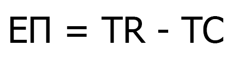Рівняння фішера
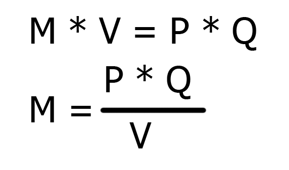Гранична корисність
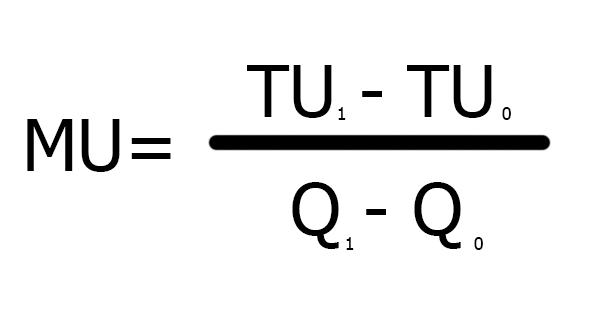Гранична норма заміни
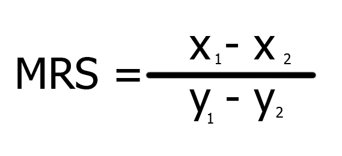Граничний дохід
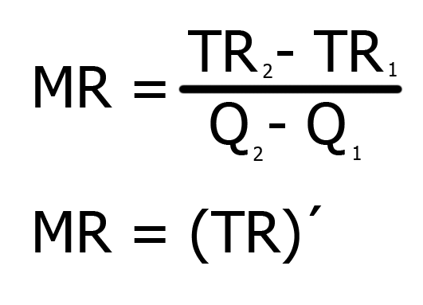Інфляція
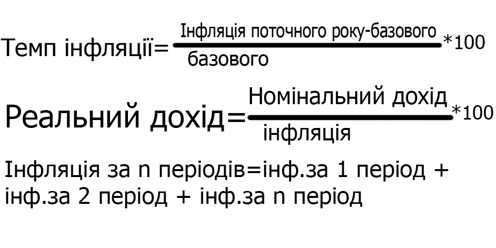Коефіцієнт еластичності
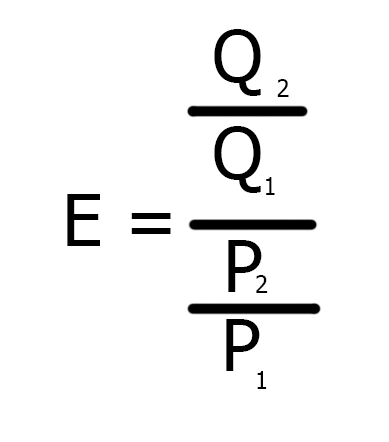Курс валют
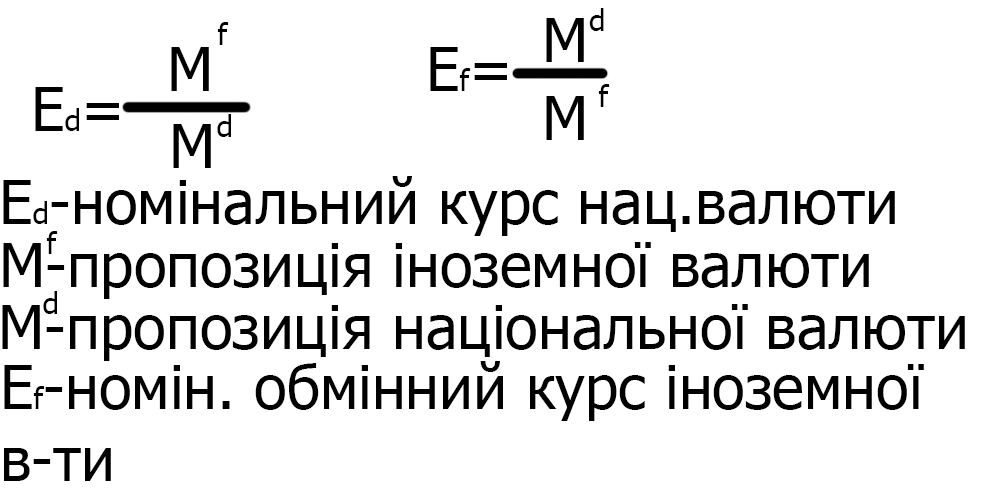Максимізація добробуту споживача
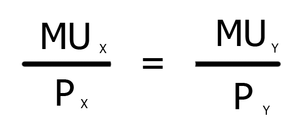Максимізація рівноваги споживача
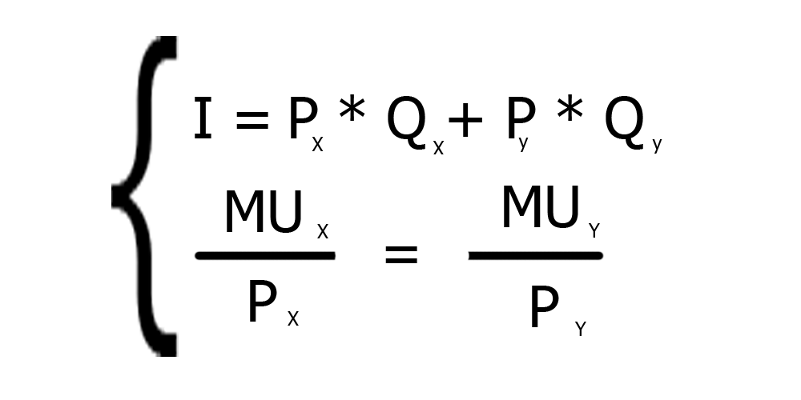Ціна оренди
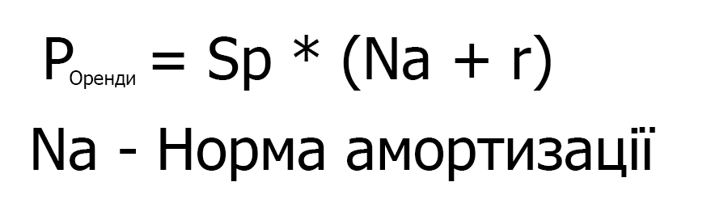Ціна землі
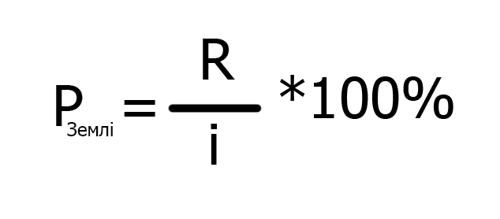Податки
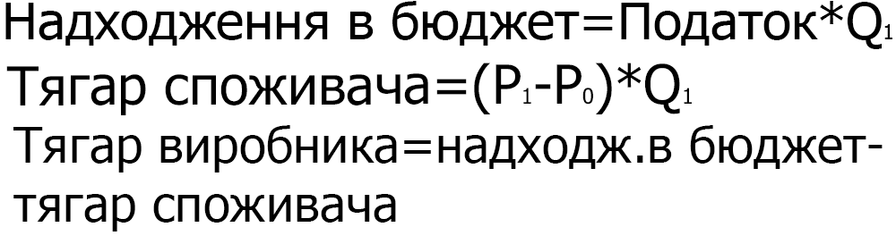Попит на гроші
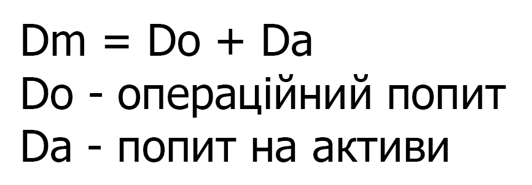Продуктивність праці
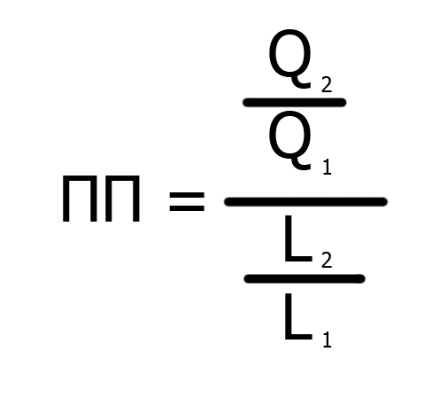Рівновага на ринку
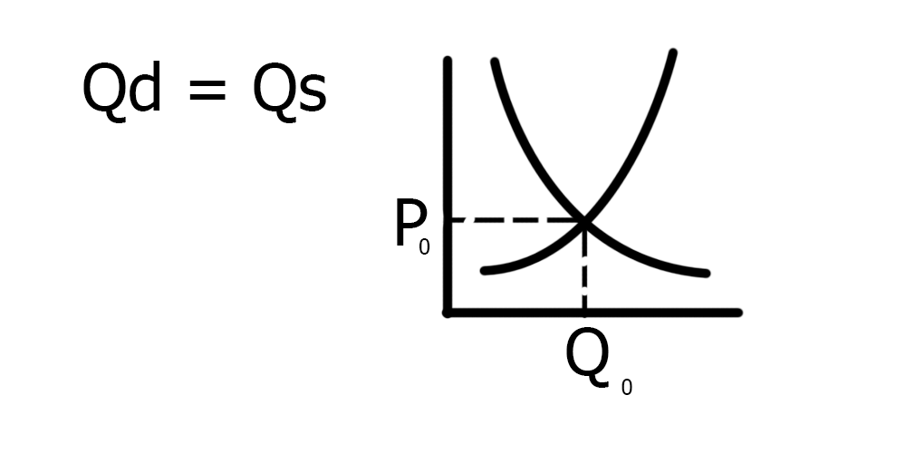Середній дохід
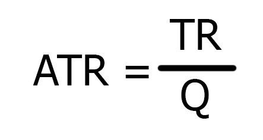Сукупні видатки і сукупний дохід
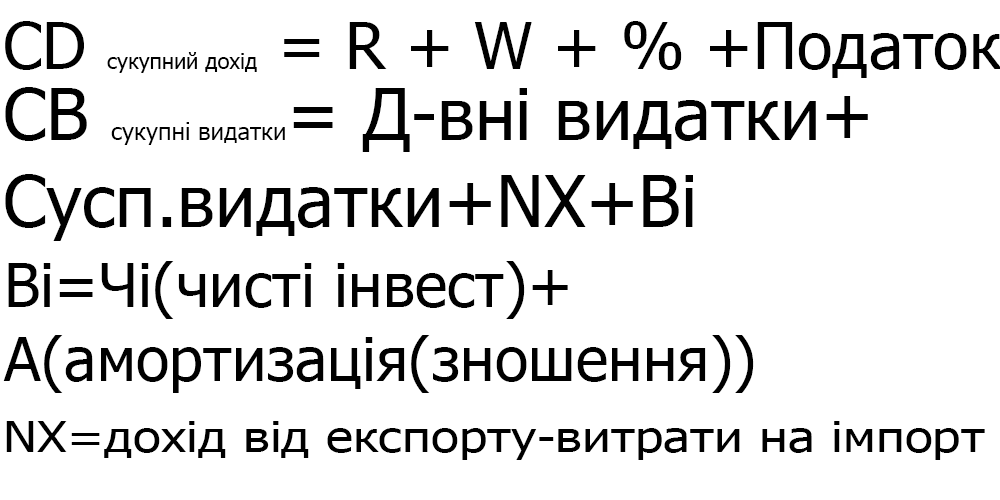Темп економічного зростання
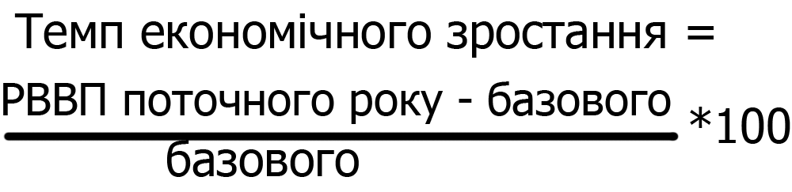Витрати
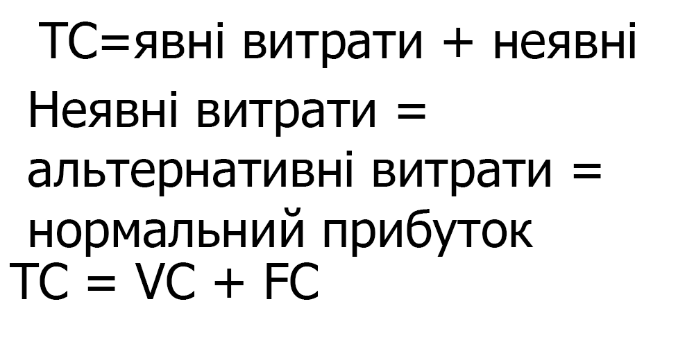ВВП,ВНД,ЧНП
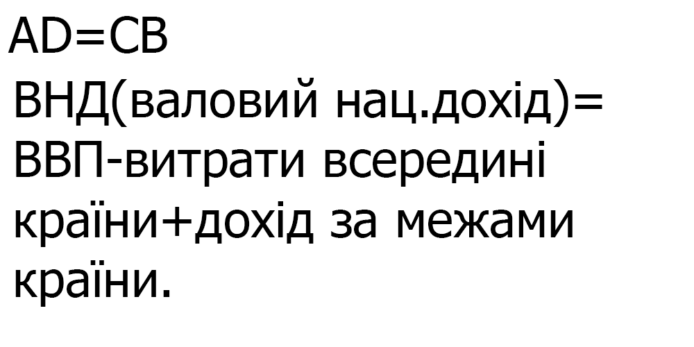Зарплата
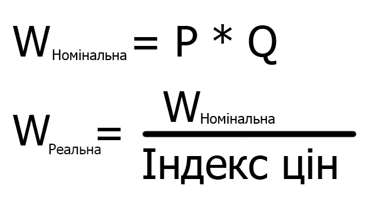